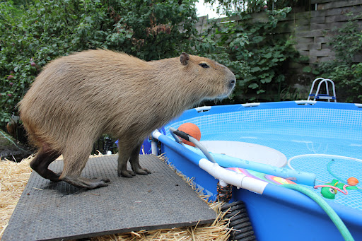

Capybaras as pets

While capybaras are kept as pets in some parts of the world, it's important to note that they
are not suitable
for everyone.
They have unique care requirements and can be challenging to care for properly, and in some places, keeping a
capybara as a pet may be illegal.
If you're considering keeping a capybara as a pet, there are several conditions that must be
met to ensure their
well-being:
- Space: Capybaras are large animals and require a lot of space to move around.
They need a spacious outdoor enclosure with access to water for swimming and mud baths. The enclosure should
be secure and protected from predators.
Socialization: Capybaras are social animals and need companionship.
If kept as a pet, they should be kept with at least one other capybara or another species of animal that they
get along with, such as a dog or goat.
- Diet:Capybaras have specific dietary requirements, including a diet of hay, fresh fruits and
vegetables,
and specially formulated pellets.
They should have access to clean, fresh water at all times.
- Health care: Capybaras require regular veterinary check-ups and vaccinations to prevent disease.
They are also susceptible to certain health conditions, such as dental problems and skin infections, that
require prompt medical attention.
- Training and handling: Capybaras are intelligent animals and can be trained, but they require gentle
and
consistent handling. They can also be stubborn and difficult to train at times.
Legal requirements: In many places, keeping a capybara as a pet may be illegal or require a special
permit.
Before considering a capybara as a pet, research local laws and regulations to ensure that you
are in
compliance.